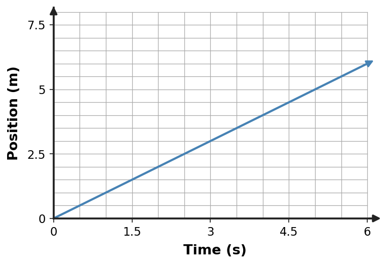

Section 2.5 — Set 3
Section 2.5 — Motion and Kinematics
1. Which velocity vector correctly represents motion right at 2 m/s if the reference arrow for 2 m/s has the stated scale?
- an arrow pointing opposite right with the correct length
- an arrow pointing right with zero length
- a dot with no direction
- an arrow pointing right with the correct scaled length
2. Which velocity vector correctly represents motion down at 8 m/s if the reference arrow for 8 m/s has the stated scale?
- an arrow pointing opposite down with the correct length
- an arrow pointing down with zero length
- a dot with no direction
- an arrow pointing down with the correct scaled length
3. Which velocity vector correctly represents motion right at 7 m/s if the reference arrow for 7 m/s has the stated scale?
- an arrow pointing opposite right with the correct length
- an arrow pointing right with zero length
- a dot with no direction
- an arrow pointing right with the correct scaled length
4. A position–time graph is shown. Write a motion description consistent with the graph, then identify one common incorrect interpretation and correct it.
- The object is climbing a physical hill because the line rises.
- The object is accelerating because position increases.
- The object is at rest because the line is straight.
- The object moves in the positive direction at constant velocity 1 m/s. The graph height represents position, not physical height above the ground.

5. A position–time graph is shown. Write a motion description consistent with the graph, then identify one common incorrect interpretation and correct it.

6. Which velocity vector correctly represents motion up at 8 m/s if the reference arrow for 8 m/s has the stated scale?
- an arrow pointing opposite up with the correct length
- an arrow pointing up with zero length
- a dot with no direction
- an arrow pointing up with the correct scaled length
7. Vector A is 4 cm long and points east. Vector B is 4 cm long and points north. Determine whether the object’s velocity changed and explain what feature of the vectors supports your answer.
- Yes only if the arrow lengths also change.
- Yes. The speed magnitude can be the same, but the direction changes from east to north, so velocity changes.
- No; equal arrow lengths guarantee equal velocity.
- No; direction is not part of velocity.
8. Vector A is 4 cm long and points east. Vector B is 4 cm long and points north. Determine whether the object’s velocity changed and explain what feature of the vectors supports your answer.
9. Vector A is 4 cm long and points east. Vector B is 4 cm long and points north. Determine whether the object’s velocity changed and explain what feature of the vectors supports your answer.
10. Construct a velocity vector for an object moving down at 4 m/s. Use arrow direction for motion direction and arrow length to represent speed.
11. Two velocity arrows point east. The second arrow is twice as long as the first. Explain what changed and what stayed the same.
12. Two velocity arrows point east. The second arrow is twice as long as the first. Explain what changed and what stayed the same.
13. Vector A is 4 cm long and points east. Vector B is 4 cm long and points north. Determine whether the object’s velocity changed and explain what feature of the vectors supports your answer.
14. Vector A is 4 cm long and points east. Vector B is 4 cm long and points north. Determine whether the object’s velocity changed and explain what feature of the vectors supports your answer.
- Yes only if the arrow lengths also change.
- Yes. The speed magnitude can be the same, but the direction changes from east to north, so velocity changes.
- No; equal arrow lengths guarantee equal velocity.
- No; direction is not part of velocity.
15. A position–time graph is shown. Write a motion description consistent with the graph, then identify one common incorrect interpretation and correct it.

16. A position–time graph is shown. Write a motion description consistent with the graph, then identify one common incorrect interpretation and correct it.

17. Construct a velocity vector for an object moving up at 5 m/s. Use arrow direction for motion direction and arrow length to represent speed.
18. A position–time graph is shown. Write a motion description consistent with the graph, then identify one common incorrect interpretation and correct it.
- The object is climbing a physical hill because the line rises.
- The object is accelerating because position increases.
- The object is at rest because the line is straight.
- The object moves in the positive direction at constant velocity 4 m/s. The graph height represents position, not physical height above the ground.

19. A position–time graph is shown. Write a motion description consistent with the graph, then identify one common incorrect interpretation and correct it.

20. A position–time graph is shown. Write a motion description consistent with the graph, then identify one common incorrect interpretation and correct it.
- The object is climbing a physical hill because the line rises.
- The object is accelerating because position increases.
- The object is at rest because the line is straight.
- The object moves in the positive direction at constant velocity 3 m/s. The graph height represents position, not physical height above the ground.

21. Construct a velocity vector for an object moving left at 8 m/s. Use arrow direction for motion direction and arrow length to represent speed.
22. Construct a velocity vector for an object moving left at 2 m/s. Use arrow direction for motion direction and arrow length to represent speed.
23. A position–time graph is shown. Write a motion description consistent with the graph, then identify one common incorrect interpretation and correct it.
- The object is climbing a physical hill because the line rises.
- The object is accelerating because position increases.
- The object is at rest because the line is straight.
- The object moves in the positive direction at constant velocity 3 m/s. The graph height represents position, not physical height above the ground.

24. Vector A is 4 cm long and points east. Vector B is 4 cm long and points north. Determine whether the object’s velocity changed and explain what feature of the vectors supports your answer.
- Yes only if the arrow lengths also change.
- Yes. The speed magnitude can be the same, but the direction changes from east to north, so velocity changes.
- No; equal arrow lengths guarantee equal velocity.
- No; direction is not part of velocity.